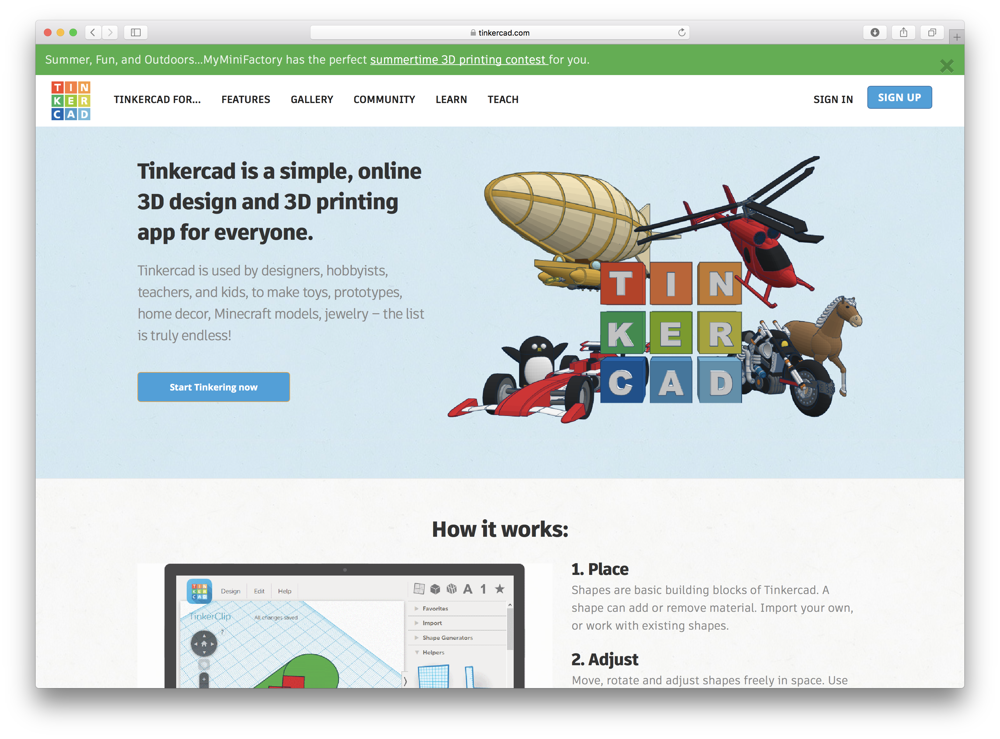

Open TinkerCAD, sign in with your account & click on "Create new design" on your Dashboard. 
Drag and drop the orange cylinder from the right side panel onto the workplane.
Use the white squares to change the cylinder diameter size to 10.00 mm (10 mm width and 10 mm depth).
The cylinder height does not need to be changed (20mm).